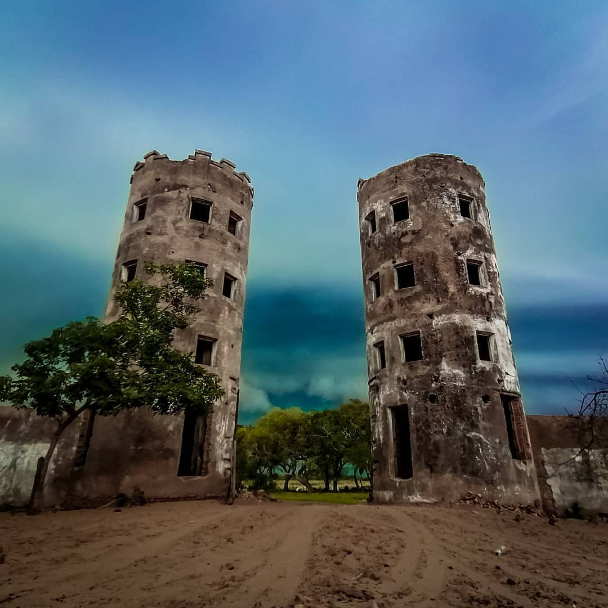
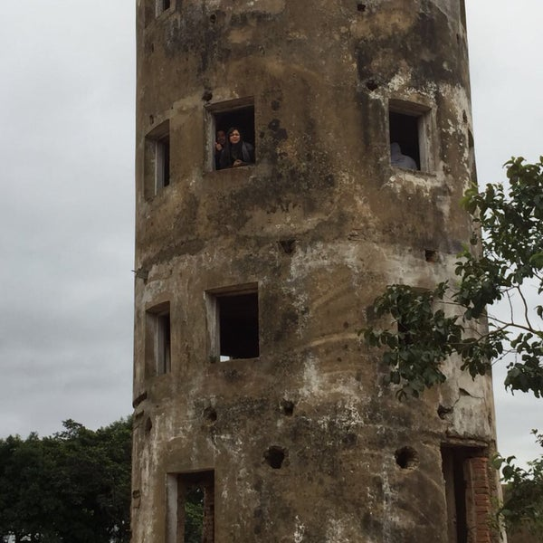
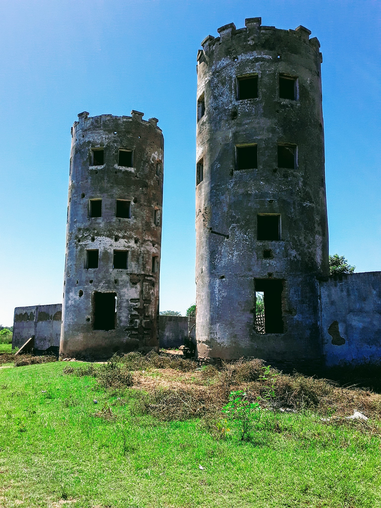
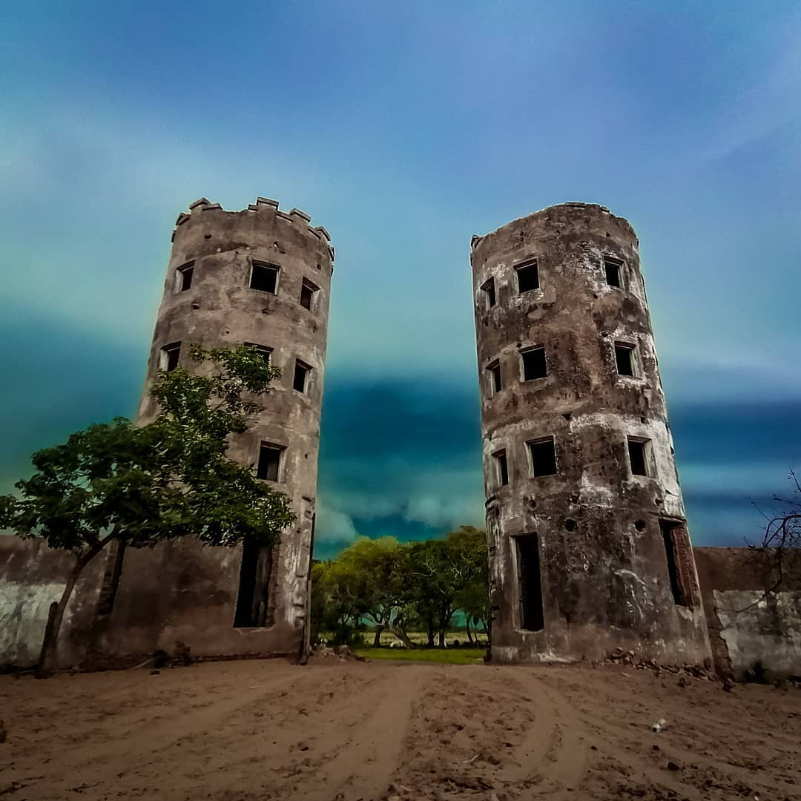
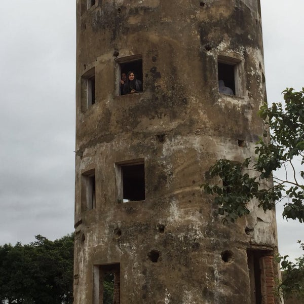
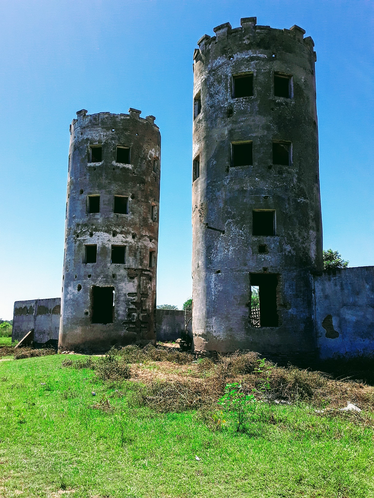

Tres Coronas, un hermoso complejo turístico ubicado en el departamento de Ñeembucú. Tres Coronas está rodeado de naturaleza exuberante, con algunas especies de animales en peligro de extinción. El complejo es un oasis de paz y descanso, con un entorno ideal para la práctica de deportes como la pesca, el kayak y la observación de aves. El clima en Tres Coronas es cálido y húmedo, con un promedio de 30 grados en verano, y 20 grados en invierno. El complejo tiene una enorme variedad de actividades, como caminatas, visitas a parajes arqueológicos, el zipline, una zona de acampada y un spa, donde se puede relajar y disfrutar del paisaje.
Tres Coronas es conocido por ser una localidad ideal para la observación de aves. Es frecuente ver aves de paso como el sargento real, el pavón real y el acamamari, así como muchas otras especies. También es posible observar la vida salvaje de peces y tortugas, como el surubi y la tortuga caimanera. El complejo es un gran refugio para la naturaleza.
Te recomiendo la temporada entre mayo y agosto, ya que es cuando se observa más naturaleza en la zona. Hay varios hoteles y cabañas en Tres Coronas, y está bien conectado a distintas localidades. La ciudad más cercana es Asunción, con vuelos internacionales y vías de transporte a pie de playa.
Los artículos más importantes son un protector solar, repelente de mosquitos, ropa ligera, zapatos cómodos y una buena cámara. Asimismo, la comida en Tres Coronas es deliciosa, con opciones típicas de la zona como el chipa guasu, el jopara'i y el mbeju.
Por último, Tres Coronas es un lugar seguro para visitar, con una gente amable y acogedora. En cuanto a las actividades nocturnas, Tres Coronas es una zona tranquila, por lo que se recomienda visitar el lugar con alguien que conozca la región. Te recomiendo ir con un guía turístico, que te acompañará a todos los lugares.
 




